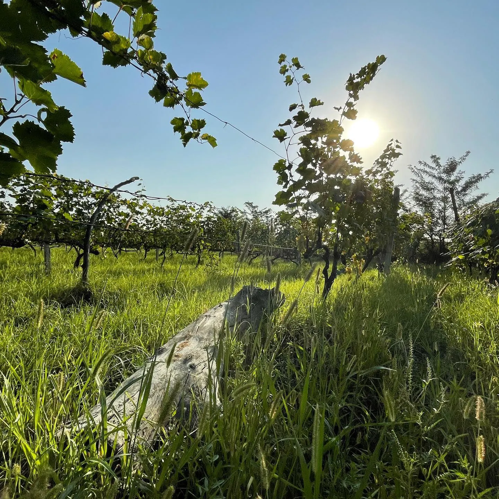
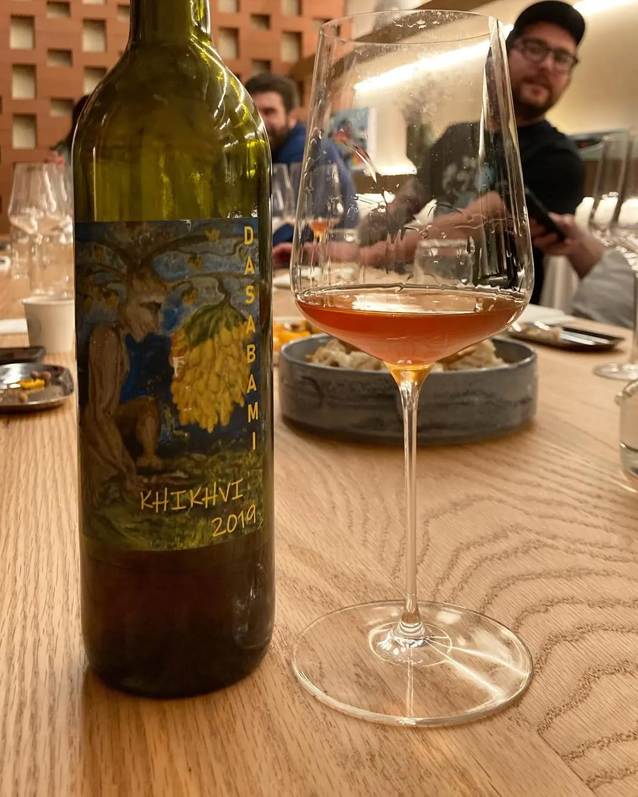
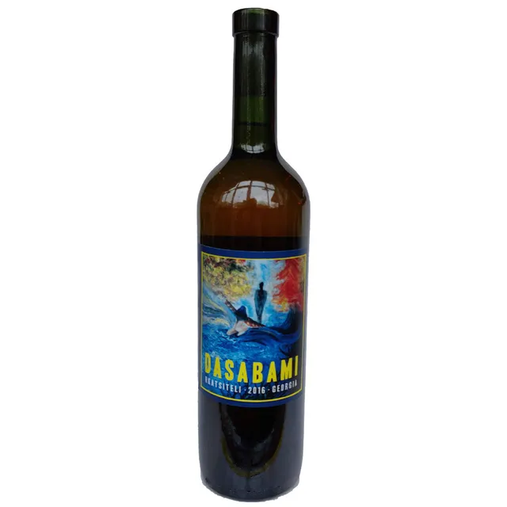
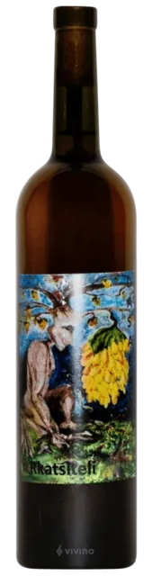

0ha
ViñedoEcológico, cultivado por la familia, en Tamarisi
Vino natural, ecológico y de qvevri, de un viñedo familiar de 70 años en Kvemo Kartli, Georgia. Cuatro uvas autóctonas y un qvevri de más de un siglo.

En las colinas de Kvemo Kartli, una familia cultiva en ecológico una sola hectárea de viñas de 70 años y deja que Rkatsiteli, Mtsvane, Khikhvi y Tavkveri se conviertan en vino como lo hacía el padre de Zaza: con sus pieles, en barro, bajo tierra.
ViñedoEcológico, cultivado por la familia, en Tamarisi

Viñas viejasLa edad del viñedo familiar

Botellas al añoComo máximo. Cada vino son unos cientos de botellas.

Qvevri centenarioLa vasija de barro de la familia, con más de un siglo

Primer embotelladoTras tres generaciones elaborando vino

Dasabami la fundó el padre de Zaza en el pueblo de Tamarisi, al sur de Tiflis. Zaza heredó de él el marani familiar, la bodega tradicional, y hoy toda la familia elabora el vino junta.
Militar de profesión, Zaza embotelló por primera vez el vino familiar en 2012. Dasabami es miembro de la Asociación de Vino Natural de Georgia.


Uva ecológica, levaduras salvajes, sin clarificar, sin filtrar. Las blancas maceran con sus pieles en qvevri y se convierten en vino ámbar, o vino naranja; el Tavkveri es el tinto.
Ver todos los vinosTodos los vinos: levaduras autóctonas, fermentados y criados en qvevri, sin clarificar, sin filtrar, sin SO₂ añadido, suelo aluvial, 750 ml.
Fuente: Roni Selects fichas técnicas (importador en EE. UU.). Las barras comparan con 12 meses y 900 botellas.
El vino de qvevri es la forma en que Georgia elabora vino natural desde hace unos 8.000 años. En Dasabami no ha cambiado.




Una hectárea en Tamarisi, al este del río Khrami. El viñedo tiene unos 70 años y está plantado con Rkatsiteli, Mtsvane y Tavkveri; la Khikhvi se añadió hacia 2009.
Un viñedo familiar, trabajado estación tras estación. En invierno, las viejas cepas en espaldera se podan a mano, listas para la próxima añada.
La uva fermenta con sus propias levaduras autóctonas en qvevri de barro enterrados en la tierra, uno de ellos con más de un siglo. Las blancas permanecen con sus pieles de tres a doce meses y se vuelven ámbar.
Sin clarificar, sin filtrar, sin SO₂ añadido. Cada vino son unos cientos de botellas, unas 3.000 en total cada año.
this Rkatsiteli she selected for us was divine.
Considerado uno de los productores que iniciaron el movimiento del vino natural en Georgia.
Una sola hectárea familiar, unas 3.000 botellas al año y un qvevri familiar que ha superado el siglo.
Aparece en Tasting Georgia: un viaje en coche con Zaza desde Tiflis hasta su bodega de Tamarisi, pasando por las bodegas de qvevri de Shavnabada.
Zaza heredó el marani de su padre y lleva a su hijo pequeño a las viñas para que la tradición continúe.
El Rkatsiteli 2010, cinco años en qvevri: sedoso, de color ámbar dorado, con notas de mora ártica y espino amarillo, y magnífico con queso.
La tienda de vino natural de Hamburgo clasificó el Khikhvi 2018 como enérgico, vibrante y profundo.
De nuestro Instagram y de los bares, tiendas y amigos que nos etiquetan.
Lugares que han vendido o servido Dasabami. Para conseguir botellas, escríbenos.


Tiendas de todo el mundo que han vendido Dasabami. Para comprar una botella, escríbenos.
 MORE Natural Wine
Berlín · envíos a la UE y Reino Unido
Khikhvi 2019
MORE Natural Wine
Berlín · envíos a la UE y Reino Unido
Khikhvi 2019

Hop Burns & Black Londres, Reino Unido Rkatsiteli 2016 The Cellar d’Or
Ithaca, Nueva York
Rkatsiteli 2022 y 2020
The Cellar d’Or
Ithaca, Nueva York
Rkatsiteli 2022 y 2020
 Grand Wine Cellar
Syosset, Nueva York
Rkatsiteli · caja de 12 botellas
Grand Wine Cellar
Syosset, Nueva York
Rkatsiteli · caja de 12 botellas
 Flatiron Wines
San Francisco
Colección Dasabami
Flatiron Wines
San Francisco
Colección Dasabami
Perfiles, reseñas e importador
 Roni Selects
Importador en EE. UU.
Página del productor y fichas técnicas
Roni Selects
Importador en EE. UU.
Página del productor y fichas técnicas
 Raisin
App de vino natural
Reseñas de la comunidad
Raisin
App de vino natural
Reseñas de la comunidad
 Asociación de Vino Natural
Georgia
Perfil de socio y viñedos
Asociación de Vino Natural
Georgia
Perfil de socio y viñedos
 Wines of Georgia
Directorio
Perfil de la bodega
Wines of Georgia
Directorio
Perfil de la bodega

Vivino 3,8 de 222 valoraciones Página de la bodegaDasabami sirve sus vinos en Amber Georgia, la feria itinerante del vino natural georgiano, el 28 de noviembre de 2026.
Dasabami (დასაბამი, «el principio») es una bodega familiar de vino natural en Tamarisi, un pueblo del municipio de Marneuli, en Kvemo Kartli (Georgia). La fundó el padre del viticultor Zaza Darsavelidze y elabora hasta unas 3.000 botellas al año de vino natural y ecológico de qvevri a partir de una sola hectárea.
Zaza Darsavelidze y toda su familia. Zaza es la tercera generación de la familia que elabora vino en Baja Kartli, y embotelló por primera vez el vino familiar en 2012.
En el pueblo de Tamarisi, municipio de Marneuli, en Kvemo Kartli (Baja Kartli), Georgia, al sur de Tiflis y al este del río Khrami. El viñedo tiene alrededor de una hectárea y unos 70 años.
Cuatro variedades autóctonas georgianas: Rkatsiteli, Mtsvane y Khikhvi, con las que elabora vinos ámbar, y Tavkveri, un tinto. Las cepas viejas tienen unos 70 años; la Khikhvi se plantó hacia 2009.
En qvevri, tinajas de barro enterradas en el suelo. La uva fermenta con levaduras autóctonas; las uvas blancas permanecen con sus pieles de tres a doce meses y se vuelven ámbar. Los vinos no se clarifican ni se filtran y se embotellan sin SO₂ añadido. Uno de los qvevri de la familia tiene más de un siglo.
Sí. Dasabami es un vino natural georgiano: el viñedo se cultiva en ecológico (orgánico), las fichas técnicas del importador indican que no lleva sulfitos añadidos, que fermenta con levaduras autóctonas y que no se clarifica ni se filtra, y Dasabami es miembro de la Asociación de Vino Natural de Georgia.
Hasta unas 3.000 botellas al año en total. Cada vino es un lote pequeño, desde 180 botellas (Tavkveri 2020) hasta 900 botellas (Rkatsiteli 2020).
En Tiflis, en 27 Wine Cellar & Shop y en Sulico Wine Bar (calle Zandukeli 27) y en Dadi Wine Bar (calle Dadiani 4, junto a la plaza de la Libertad), y en Estados Unidos a través del importador Roni Selects. Entre las tiendas online que lo han vendido están MORE Natural Wine (Berlín), Hop Burns & Black (Londres), The Cellar d’Or y Grand Wine Cellar (Nueva York). Para comprar una botella, escríbenos o envía un mensaje a @dasabami en Instagram.
Dasabami (დასაბამი) significa en georgiano «el principio» o «el origen».
Envíanos un correo, o envía un mensaje a @dasabami en Instagram.